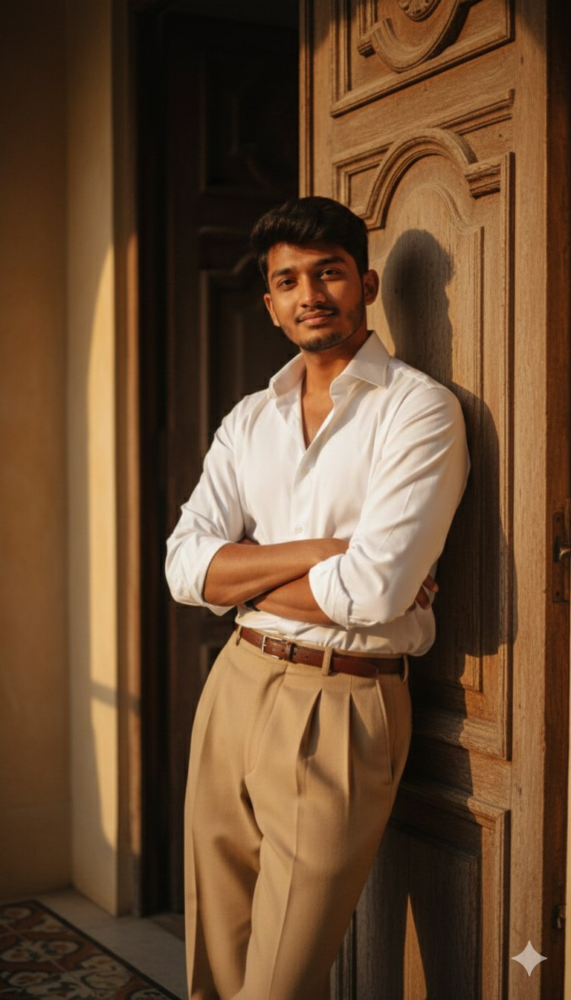

Trending AI Prompts
Popular and Viral AI Image Prompts
These trending AI prompts are inspired by popular styles and viral image generation trends. Perfect for creating eye-catching visuals using AI tools.

1. Ultra-Realistic Portrait
nostalgic feel. A cinematic close-up fashion portrait of a man leaning against an old doorway inside a Mediterranean villa. He wears a crisp white button-up shirt with the top buttons undone, sleeves rolled up casually, and high- waisted pleated tan trousers with a slim brown leather belt. His pose is relaxed, with arms crossed, exuding effortless confidence. Style & Atmosphere: Aesthetic: timeless Mediterranean elegance, reminiscent of a 1970s Italian film still. Background: textured, sunlit plaster walls with subtle architectural details and vintage tiled flooring, softly blurred to emphasize the subject. Lighting: dramatic golden-hour sunlight streaming through the doorway, casting warm highlights and long, cinematic shadows across his face and clothes. Color palette: warm earth tones - tans, creams, browns, golden highlights, and soft contrasts. Film look: subtle grain, slight fade, analog photography texture for a Framing: medium close-up to 3/4 body shot, keeping the face, shirt details, and trousers in sharp focus, while maintaining the dramatic light-play in the scene. Mood: cinematic. refined, and timeless - like a still from an art-house film

2. a vintage 1970s Bollywood-inspired photograph of a stylish man
Create a vintage 1970s Bollywood-inspired photograph of a stylish man sitting casually on the hood of a classic car. He is dressed in a cream pinstriped blazer, cream bell-bottom trousers, and a dark brown shirt with the top buttons open, paired with brown formal shoes, giving a confident mafia-style look. The car has wide whitewall tires, chrome details, and a polished metallic body, reflecting sunlight. In the background, tall green trees and hedges frame the scene. The photograph has the warm, grainy tones of a 1970s film camera, giving it a retro cinematic vibe.

3. Hyper-realistic cinematic portrait
Hyper-realistic cinematic portrait on a deep burgundy backdrop. Maroon velvet blazer, black silk shirt, slim trousers. Leaning on elegant chair, one arm draped, confident gaze. Rich waves with highlights. Golden spotlight, dramatic shadows, ultra-detailed fabrics, skin tones, luxury editorial vibe. 85mm lens, 9:16 Instagram style

4. retro-modern cinematic image
Create a retro-modern cinematic image with subtle film grain and soft golden sunlight rays. The boy is styled in a Gen-Z creative influencer aesthetic: an oversized maroon shirt with a slightly silky texture, half-tucked into off-white wide-leg trousers that balance casual streetwear with polished tailoring. Footwear combines chunky sneakers with a sleek, Accessories include layered minimalist jewelry, a slim belt, a crossbody bag, and subtle statement rings. His dark brown hair is wavy, windswept, styled with an effortless editorial casual look. The atmosphere channels a 908 indie movie reimagined for Gen-Z Instagram standing under a glowing vintage streetlight, book in hand, as autumn leaves swirl in the breeze. Lighting emphasizes romantic contrasts, creating a dreamy, curated mood that feels both relaxed and fashion-forward

5.
A black-and-white aesthetic portrait of a stylish me (use my image with an accurate face) sitting 100% on the floor in dramatic lighting. He is wearing an oversized dark coat, with messy, voluminous hair partially covering his face. His pose is emotional and introspective, with one hand near his mouth and his head slightly turned to the side. Shadows from a window fall across the wall behind him, creating a moody and artistic atmosphere. The overall vibe is mysterious, emotional, and cinematic.

6. High-fashion editorial portrait
"High-fashion editorial portrait of a confident man posed against a deep crimson backdrop. He's dressed in a tailored, white shirt with the top buttons undone. The sleeves are casually rolled up, revealing strong forearms adorned with formal watch. Paired with the look are high-waisted, brown trousers, tucked neatly at the waist for a sharp and elegant silhouetteGenerates neon-lit cityscapes with cinematic detail. Perfect for futuristic scenes.

7.A striking, low-angle portrait photograph of a young person
A striking, low-angle portrait photograph of a young person from uploaded image (androgynous/male-presenting) with dark, slightly messy hair, seated casually atop a teal or mint green lifeguard stand or wooden structure. They are looking down and slightly to the side with a pensive, perhaps bored or melancholic expression, propping their chin on their hand. They are wearing a soft blue Hawaiian shirt, cuffed light blue jeans, prominent white sock, and white sneakers with a blue swoosh. The background is a vast, clear, bright blue sky with a single thin cloud, creating a strong contrast with the subject and the structure. The lighting is bright natural daylight, highlighting the vibrant colors and giving a nostalgic, retro, or cinematic feel, evocative of a youthful summer day. The composition is vertical, emphasizing the height and the expanse of the sky

8. fashion-editorial portrait.
Use same face 100% High-end, fashion-editorial portrait. Subject with same messy hair, soft expression, head slightly tilted. Oversized, distressed, beige loose-knit sweater. Simple silver chain. Solid, vibrant red background. Clean, minimal, soft aesthetic. Smooth, well-lit skin. Subtle, moody lighting and gentle shadows for a cinematic color tone.

9. trending prompt
Hyper-realistic overhead 9:16 close-up of myself (use my face with accurate 100%), playfully leaning against an ivy-covered stone wall of an old countryside cottage during golden hour. Slim body.one hand brushing away a dangling vine. soit loose white cargo t-shirt. Black round watch The flowering vines are in full bloom with orange, magenta, softly blurred in the.not smile

10. fashion editorial x futuristic.
wearing outfit: oversized white sweatshirt, white purple oversized combat jean, styled with footwear: white purple neutral or nike sneakers and white ribbed socks. Style: fashion editorial x futuristic. Environment: muted white purple-toned studio background. Lighting: soft cinematic glow highlighting skin and fabric textures. Composition: model seated elegantly with relaxed posture. In floor keep my face and body hair style 100% same as in reference Images

11.A hyper-realistic cinematic winter portrait
A hyper-realistic cinematic winter portrait of the person in the uploaded pictures standing at night under falling snow. He wears an ivory-Black coat with a soft scarf wrapped around his neck. One hand is in his coat pocket, the other gently His head is slightly tilted up, eyes half-closed, smiling calmly at the camera. A warm yellow streetlight creates a soft golden glow around him, while snow sparkles against the dark night sky. The street lights behind him are decorated for 8K, vertical 3:4. Christmas Romantic, dreamy winter movie mood. Ultra-detailed, editorial cinematic style, Keep the original face, hair, beard, and overall facial Likes structure exactly as in the uploaded image, without any alteration to expression, proportions, or skin toneGenerates stylish cyberpunk portraits. Perfect for character design.

12. Cinematic editorial portrait of a man holding a burning newspaper
Cinematic editorial portrait of a man holding a burning newspaper, flames curling around the edges. He wears a sharp black suit. Dark background enhances the fire glow, with warm highlights on his clothes. Ultra-detailed, high- contrast lightingGenerates realistic images of food dishes. Great for blogs or marketing.

13. realistic action shot
8K hyper-realistic action shot with the exact same face as the reference photo. The man jumps near the edge of the rocky cliff, arms open in mid-air, hair flying with the wind. He wears a black oversized hoodie, brown oversized pants, and white sneakers. The backpack remains on the rock behind him. Background stays the same: dense mist, fog-covered mountains, and a soft overcast sky. Dynamic cinematic lighting, sharp motion details, and deep atmospheric realism.

14. Digital Portrait Illustration
Crie um retrato hiper realista, a pessoa da foto em anexo está como uma guerreira selvagem com o rosto parcialmente coberto de sangue. Ela usa um colar feito de presas brancas e veste uma blusa clara sem mangas e uma saia azul-escura parcialmente rasgada. Em uma das mãos, segura uma adaga com lâmina prateada e na outra, uma máscara vermelha com detalhes brancos e olhos circulares amarelos. Atrás dela, há um grande lobo branco com olhar protetor e imponente, de expressão séria. A cena ocorre em meio à floresta, com sombras suaves das árvores ao fundo e iluminação natural difusa.